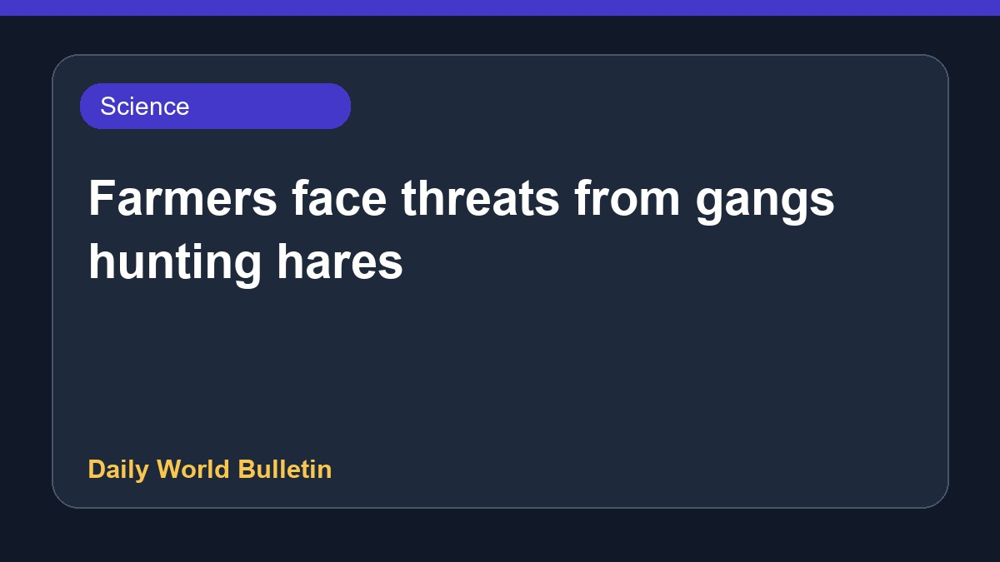

Farmers face threats from gangs hunting hares

Farmers are facing serious threats from gangs hunting hares, leading to extensive property damage. Gates have been smashed and crops destroyed during these incidents. To protect their land, some farmers have resorted to barricading field entrances using concrete blocks and fallen trees. Details regarding the specific locations and identities of the gangs involved are currently limited based on the available reports from the source.
Original source: BBC Science
Gates smashed and crops destroyed as farmers threatened by gangs hunting hares ↗
Gates smashed and crops destroyed as farmers threatened by gangs hunting hares ↗